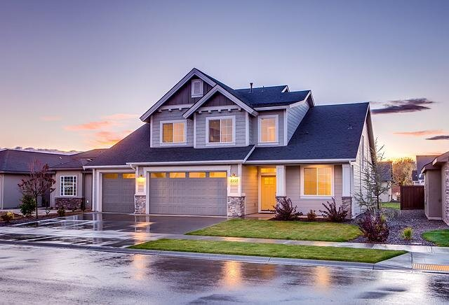

I explored global COVID-19 data using SQL Server.

Through self-learning, I've undertaken and successfully completed few Tableau projects, demonstrating my commitment to professional growth and data visualization proficiency. I am eager to further enhance my skills and contribute even more effectively to your organization's success by leveraging the full potential of Tableau's capabilities.

Donec eget ex magna. Interdum et malesuada fames ac ante ipsum primis in faucibus. Pellentesque venenatis dolor imperdiet dolor mattis sagittis magna etiam.

In this project, I efficiently clean and transform raw housing data in SQL Server to ensure accuracy and reliability for analysis.